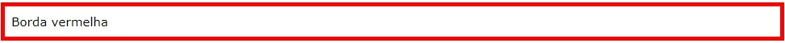
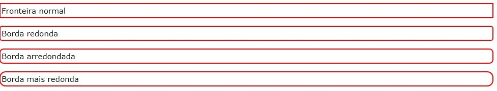

As borderpropriedades CSS permitem que você especifique o estilo, a largura e a cor da borda de um elemento.
A border-stylepropriedade especifica o tipo de borda a ser exibido.
Os seguintes valores são permitidos:
A border-style propriedade pode ter de um a quatro valores (para a borda superior, borda direita, borda inferior e borda esquerda).
Nota:Nenhuma das outras propriedades de borda CSS descritas abaixo terá QUALQUER efeito, a menos que a border-stylepropriedade esteja definida!
A border-widthpropriedade especifica a largura das quatro bordas.
A largura pode ser definida como um tamanho específico (em px, pt, cm, em, etc) ou usando um dos três valores predefinidos: thin, medium ou thick.
A border-widthpropriedade pode ter de um a quatro valores (para a borda superior, borda direita, borda inferior e borda esquerda).
A border-colorpropriedade é usada para definir a cor das quatro bordas.
A cor pode ser definida por:
A border-colorpropriedade pode ter de um a quatro valores (para a borda superior, borda direita, borda inferior e borda esquerda).
Se border-colornão estiver definido, herda a cor do elemento.
Nos exemplos acima, você viu que é possível especificar uma borda diferente para cada lado.
Em CSS, há também propriedades para especificar cada uma das bordas (superior, direita, inferior e esquerda):
O exemplo acima fornece o mesmo resultado como este:
Então, aqui está como funciona:
Se a border-stylepropriedade tiver quatro valores:
Se a border-stylepropriedade tiver três valores:
Se a border-stylepropriedade tiver dois valores:
Se a border-stylepropriedade tiver um valor:
A border-stylepropriedade é usada no exemplo acima. No entanto, também funciona com border-width e border-color.
Como você pode ver nos exemplos acima, há muitas propriedades a serem consideradas ao lidar com bordas.
Para encurtar o código, também é possível especificar todas as propriedades de borda individuais em uma propriedade.
A borderpropriedade é uma propriedade abreviada para as seguintes propriedades de borda individuais:
Você também pode especificar todas as propriedades de borda individuais para apenas um lado:
A border-radiuspropriedade é usada para adicionar bordas arredondadas a um elemento:
Nota:A border-radiuspropriedade não é suportada no IE8 e em versões anteriores.